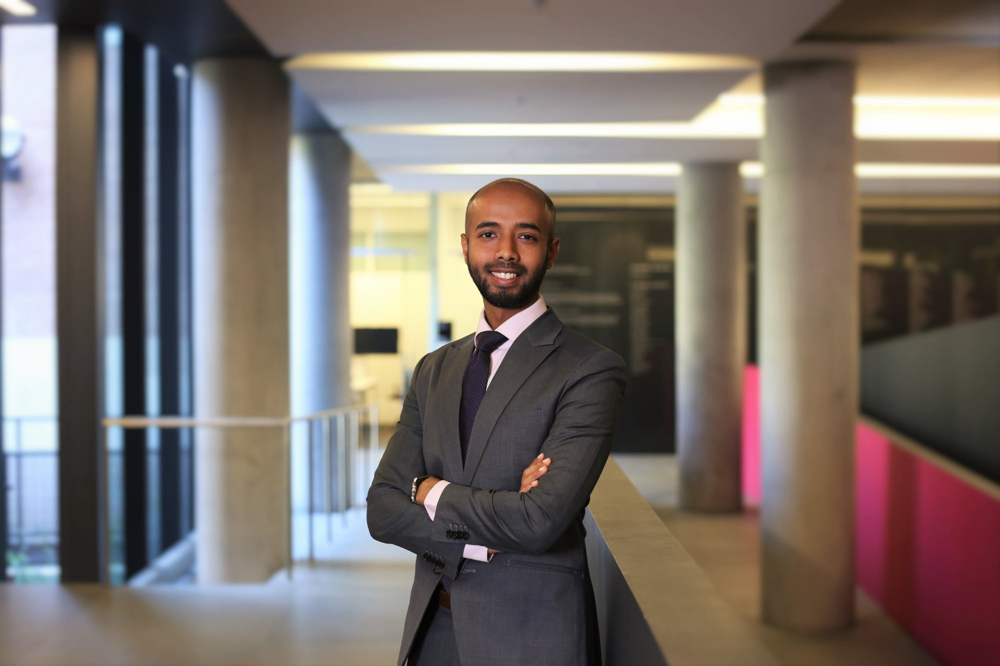

The Impact of FAS 123R on Employee Retention
with Francesco Bova and Nan Li
Forthcoming · Accounting PerspectivesAssistant Professor · School of Accounting and Finance
I study the real effects of financial reporting and market forces, with a focus on issues that matter for society: government procurement, sustainability, and market fairness. I teach intermediate financial accounting at the University of Waterloo, and I build software for the research community.

I am an Assistant Professor in the School of Accounting and Finance at the University of Waterloo. My research investigates the real effects of financial reporting and market forces, with an evolving focus on issues that matter for society, such as government contracting, sustainability, and market fairness.
Government procurement is the area I keep returning to. Public buyers account for roughly 13% of GDP across OECD countries, yet accounting research has had remarkably little to say about how they use financial information, how they respond to bad news about their suppliers, or whether they can be used as an instrument of environmental policy. My coauthors and I are trying to answer those questions with international data.
Before academia I trained as a CPA, CA and spent three years in Assurance and Advisory at Deloitte in Toronto. That grounding shapes both what I choose to study and how I teach: I care about how standards actually behave once they meet a firm, an auditor, and a regulator. I hold a PhD in Accounting from the Rotman School of Management at the University of Toronto, and an MSc in Finance and a BComm from Queen’s University. Before joining Waterloo I was an Assistant Professor at City University of Hong Kong.
I also write software. faeconf.com came out of my own frustration with tracking conference deadlines, and I now maintain it for anyone in finance, accounting, or economics who has the same problem.
Rather than listing projects in a single undifferentiated format, I present my current pipeline organized by stage. Four papers are currently at top-tier journals, and my work on government procurement is supported by a SSHRC Insight Development Grant.
with Francesco Bova and Nan Li
Forthcoming · Accounting Perspectiveswith Ole-Kristian Hope, Sasan Saiy and Giulia Sargiacomo
Revise and resubmit, second round · Accounting, Organizations and SocietyFunding: University of Waterloo CSPM Seed Grant (2024, 2025).
Presented at: the Third Sustainability, Natural Capital & Value Creation Conference, the Academy of International Business 2025 Conference, and the McMaster Accounting Research Symposium.
with Mehedi Rasel and Mathieu Poirier
Revise and resubmit · Tobacco Control (The BMJ)Sole-authored
Under review · The Accounting Reviewwith Musaib Ashraf
Under review · Management Sciencewith Ole-Kristian Hope and Preetika Joshi
Under review · Journal of Accounting and Economicswith Preetika Joshi and Allison Koester
SSHRC Insight Development Grant 2025 · CAD $52,000Presenting at: the 2026 New Zealand Finance Meeting.
with Abdul Mohi Khizer and Suning Zhang
Finalizing for conference submissionwith Satish Sahoo
Additional data collection and analysiswith Mahfuz Chy
Primary analysisI view the classroom as a professional training ground where accountability is non-negotiable, but so is my support. I do not lower the bar when a topic is hard. Instead, I invest time and engagement to help students clear the bar. My signature practice is structured cold-calling in seating order: every student knows when their turn is coming, every student participates, and the classroom becomes a dialogue rather than a monologue.
In 2025 my teaching was rated Outstanding, the highest rating in my School’s annual evaluation framework, after two consecutive years rated Excellent. My CV records the 2025 result as being rated in the top percentile of instructors.
Across the five sections of AFM 391 I have taught at Waterloo, my weighted mean instructor rating is 4.4 / 5. As a sole instructor at Rotman I was rated 4.7 / 5 against a divisional average of 4.2, and received the Rotman Teaching Award.
Courses taught
What students say
“Please never change the cold-calling. This was the most on it I’ve ever been on any accounting course. I knew what was going on because I had to preview the lectures beforehand.”
“The cold calling helped participation, but also encouraged students to come to class prepared which further increased our understanding. He seemed to really care about his students doing well.”
“His teaching style is elite. It can be somewhat scary but it helps so much and he’s so nice so it isn’t too scary.”
“He is able to teach these difficult concepts with test-like examples, subtle humour and real life experiences.”
“Understanding is so much more important than memorizing steps.”
“Muhammad’s lectures included many examples and his style of speaking was clear and passionate. The quality of the instruction was excellent.”
I build tools for the research community. These projects sit at the intersection of what I know as a researcher and a long-standing interest in software.
The Academic Conference Tracker for finance, accounting, and economics. More than 500 conferences with submission deadlines, dates, locations, rankings, and travel cost estimates, plus list, timeline, and map views, saved shortlists, side-by-side comparison, and calendar export. I designed it, built it, and keep the data current.
Open faeconf.com →I designed and taught a Python course for incoming accounting PhD students at Rotman, and I have taught Stata for archival research one-on-one. I supervise research assistants on my own projects and train them in empirical methods.
Research grants
CAD $81,000 in competitive research funding since joining Waterloo in 2022.
Awards, fellowships & scholarships
I am always glad to hear from people working on procurement, sustainability reporting, or market structure, and from anyone who wants to talk about teaching. If you use faeconf.com and something looks wrong or missing, tell me and I will fix it.